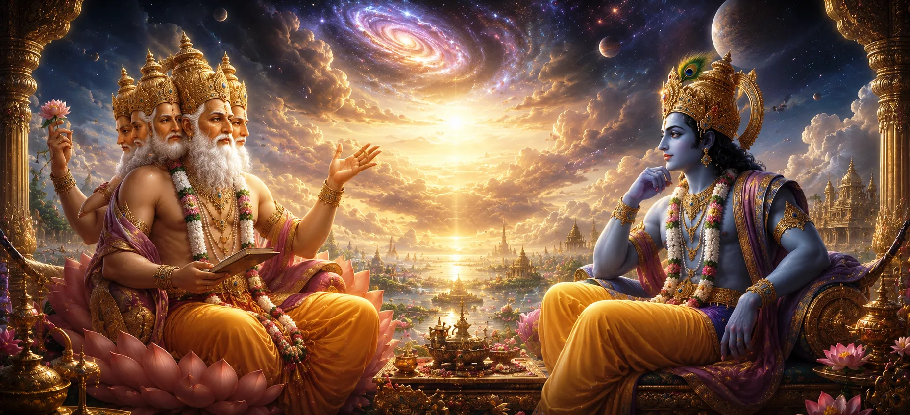

जैसे-जैसे दिव्य योजना सामने आती गई, सृष्टिकर्ता भगवान ब्रह्मा और ब्रह्मांड के संरक्षक भगवान विष्णु ने अपना ध्यान महान ब्रह्मांडीय महत्व के मामले की ओर लगाया। सृष्टि का भविष्य का कल्याण उन घटनाओं पर निर्भर था जो अभी तक घटित नहीं हुई थीं, और देवताओं ने समझा कि सावधानीपूर्वक विचार-विमर्श की आवश्यकता है। इस भावना में, ब्रह्मा और विष्णु नियति, दैवीय उद्देश्य और ब्रह्मांड के प्रकट नाटक में विभिन्न खगोलीय प्राणियों की भूमिका के संबंध में गहन संवाद में लगे हुए थे।
ये कोई सामान्य बातचीत नहीं थी. यह दो सर्वोच्च देवताओं के बीच एक संवाद था, जिनकी बुद्धि अतीत, वर्तमान और भविष्य तक फैली हुई थी। उनकी चर्चा ने ईश्वरीय व्यवस्था की गहरी कार्यप्रणाली का पता लगाया और बताया कि कैसे सृष्टि के भीतर प्रत्येक घटना एक बड़े उद्देश्य को पूरा करती है। उनके शब्दों के माध्यम से, देवताओं, संतों और मानवता के लाभ के लिए गहन आध्यात्मिक सच्चाइयों को उजागर किया जाएगा।
सबसे पहले भगवान ब्रह्मा ने सृष्टि के भविष्य के संबंध में अपनी चिंता व्यक्त करते हुए बात की। हालाँकि ब्रह्माण्ड ईश्वरीय नियम के अनुसार कार्य करता रहा, फिर भी सभी प्राणियों के कल्याण के लिए आवश्यक कुछ घटनाएँ अभी भी घटनी बाकी थीं। ब्रह्मा समझ गए कि ब्रह्मांडीय शक्तियों का संतुलन एक बड़ी योजना की सफल पूर्ति पर निर्भर करता है, और उन्होंने आगे के मार्ग के बारे में भगवान विष्णु से अंतर्दृष्टि मांगी।
भगवान विष्णु ने धैर्यपूर्वक सुना और फिर समझाया कि सभी घटनाएँ भगवान की इच्छा के अनुसार होती हैं। सामान्य प्राणियों को जो देरी से दिखाई दे सकता है वह अक्सर सावधानीपूर्वक व्यवस्थित ब्रह्मांडीय डिज़ाइन का हिस्सा होता है। उन्होंने ब्रह्मा को याद दिलाया कि दैवीय समय सही है और सृजन, संरक्षण और परिवर्तन का हर चरण उचित समय आने पर होता है।
जैसे-जैसे चर्चा गहरी हुई, दोनों देवताओं ने स्वीकार किया कि भविष्य की घटनाओं का क्रम बहुत हद तक भगवान शिव पर निर्भर है। परम योगी सांसारिक चिंताओं से अलग होकर ध्यान में डूबे रहते थे। फिर भी ब्रह्मांड के कल्याण के लिए आवश्यक है कि शिव से जुड़े कुछ दिव्य उद्देश्य अंततः पूरे हों। इस सत्य को समझते हुए, ब्रह्मा और विष्णु ने ध्यानपूर्वक विचार किया कि ब्रह्मांडीय योजना का अगला चरण कैसे सामने आ सकता है।
बातचीत ने महान देवताओं के बीच मौजूद सद्भाव को प्रदर्शित किया। यद्यपि ब्रह्मा, विष्णु और शिव अलग-अलग ब्रह्मांडीय कार्य करते हैं, फिर भी वे दैवीय व्यवस्था को बनाए रखने के लिए पूर्ण एकता में एक साथ काम करते हैं। उनकी चर्चा से पता चला कि सृष्टि का कोई भी पहलू स्वतंत्र रूप से संचालित नहीं होता; सभी सर्वोच्च वास्तविकता की इच्छा के भीतर एक दूसरे से जुड़े हुए हैं।
सभी घटनाएँ सर्वोच्च इच्छा के अनुसार उचित समय पर घटित होती हैं।
सृजन, संरक्षण और परिवर्तन एक दिव्य प्रक्रिया के रूप में एक साथ काम करते हैं।
यहाँ तक कि सामान्य प्रतीत होने वाली घटनाएँ भी एक बड़े आध्यात्मिक उद्देश्य की पूर्ति करती हैं।
ब्रह्मा और विष्णु समझ गए कि सृष्टि के कल्याण के लिए सतर्कता और सहयोग की आवश्यकता है। अत्यधिक शक्तिशाली होते हुए भी उन्होंने व्यक्तिगत इच्छाओं के अनुसार कार्य नहीं किया। इसके बजाय, उन्होंने लगातार धर्म को कायम रखने और यह सुनिश्चित करने के लिए काम किया कि ईश्वरीय योजना सभी प्राणियों के लाभ के लिए आगे बढ़े।
उनकी बातचीत का केंद्रीय विषय सर्वोच्च में विश्वास था। यहाँ तक कि जब परिस्थितियाँ अनिश्चित दिखाई दीं, तब भी देवताओं को विश्वास था कि अंततः ईश्वरीय व्यवस्था कायम रहेगी। सर्वोच्च ज्ञान के प्रति उनका भरोसा कठिन समय के दौरान मार्गदर्शन चाहने वाले संतों और भक्तों के लिए एक आदर्श बन गया।
जैसे-जैसे उनकी चर्चा आगे बढ़ी, आगे का रास्ता साफ होता गया। भगवान शिव से जुड़े लौकिक उद्देश्य की पूर्ति के लिए देवता शीघ्र ही कदम उठाएंगे। इसके बाद होने वाली घटनाओं में शक्तिशाली दैवीय शक्तियां शामिल होंगी और मिशन में भाग लेने के लिए चुने गए लोगों की ताकत का परीक्षण किया जाएगा।
ब्रह्मा और विष्णु के बीच संवाद आगे के कार्य की गहरी समझ के साथ संपन्न हुआ। मंच तैयार हो चुका था, आवश्यकता पहचानी जा चुकी थी और दिव्य योजना आगे बढ़ रही थी। अगला अध्याय बताएगा कि कैसे इन निर्णयों से सती खण्ड की कहानी में नए विकास हुए।
ब्रह्मा और विष्णु के बीच संवाद साधकों को याद दिलाता है कि दिव्य ज्ञान अक्सर धैर्य, सहयोग और विश्वास के माध्यम से काम करता है। यहां तक कि सर्वोच्च देवता भी सर्वोच्च इच्छा के अनुरूप कार्य करते हैं, यह प्रदर्शित करते हुए कि सच्ची ताकत व्यक्तिगत शक्ति में नहीं बल्कि दैवीय उद्देश्य के अनुरूप है।
ब्रह्मा और विष्णु के बीच की बातचीत सती खण्ड की कथा में एक महत्वपूर्ण मोड़ है। इससे पता चलता है कि घटित होने वाली घटनाएँ आकस्मिक घटनाएँ नहीं हैं, बल्कि दैवीय योजना के सावधानीपूर्वक व्यवस्थित हिस्से हैं। इस संवाद के माध्यम से, देवता अपनी जिम्मेदारियों के बारे में स्पष्टता प्राप्त करते हैं और आगे आने वाले कार्यों के लिए खुद को तैयार करते हैं।
चर्चा महान देवताओं के बीच एकता पर भी प्रकाश डालती है। यद्यपि वे अलग-अलग लौकिक कार्य करते हैं, फिर भी वे एक ही अंतिम उद्देश्य के लिए समर्पित रहते हैं - धर्म की रक्षा और सृष्टि का कल्याण।
दैवीय हस्तक्षेप की आवश्यकता को समझने के बाद, देवता अब सर्वोच्च देवी, ब्रह्मांडीय ऊर्जा और सुरक्षा के स्रोत की ओर रुख करते हैं। वे मानते हैं कि उनके मिशन में सफलता के लिए देवी माँ के आशीर्वाद की आवश्यकता होती है। इसलिए, भक्ति और विनम्रता के साथ, वे देवी दुर्गा की स्तुति में एक पवित्र भजन प्रस्तुत करने की तैयारी करते हैं।
अगला अध्याय इस शक्तिशाली भजन को प्रकट करेगा और उस गहन श्रद्धा को प्रदर्शित करेगा जो देवता दिव्य माँ के प्रति रखते हैं, जिनकी कृपा ब्रह्मांड की नियति का मार्गदर्शन करती है।
"देवता अपने कर्तव्यों में भिन्न हो सकते हैं, फिर भी वे उद्देश्य में एकजुट रहते हैं। सृजन, संरक्षण और परिवर्तन एक ही दिव्य वास्तविकता की विभिन्न अभिव्यक्तियाँ हैं।"
ब्रह्मा और विष्णु द्वारा चर्चा की गई दिव्य चिंताओं को समझने के बाद, कहानी अब सर्वोच्च देवी की ओर मुड़ती है। शक्ति, बुद्धि और दिव्य मार्गदर्शन की तलाश में, देवता देवी दुर्गा को एक पवित्र भजन अर्पित करते हैं, जिनकी शक्ति ब्रह्मांड को बनाए रखती है और उसकी रक्षा करती है।